Wayang Kulit berkembang pesat pada masa kerajaan Hindu-Buddha sebagai media ritual keagamaan penghormatan leluhur. Pertunjukan pada era ini umumnya mengammbil kisah-kisah epik seperti Ramayana dan Mahabhrata.
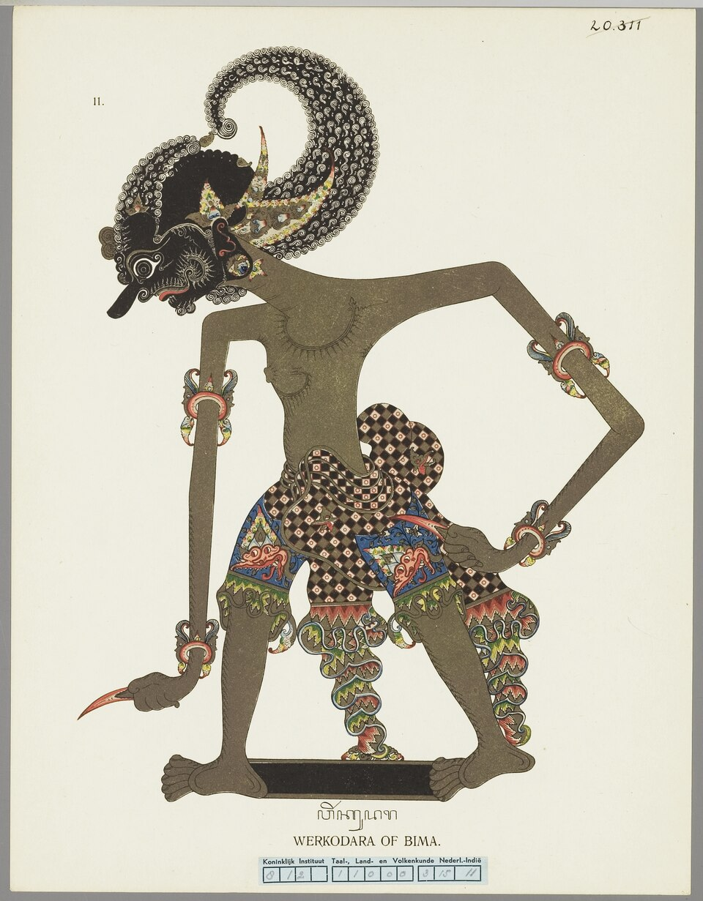
Yudhistira adalah sulung Pandawa yang terkenal dengan sifat jujur, bijaksana, dan tidak pernah berbohong sepanjang hidupnya. Ia memerintah Kerajaan Amarta dengan keadilan murni serta mengutamakan kedamaian dibanding peperangan. Sebagai sosok berjiwa suci, ia kerap menjadi panutan moral bagi saudara-saudaranya dalam menghadapi berbagai cobaan hidup.


Bima merupakan putra kedua yang memiliki fisik amat gagah perkasa serta keberanian tanpa tanding di medan laga. Meskipun perawakannya menakutkan dan bicaranya tegas, ia memiliki hati yang sangat jujur, setia, dan protektif terhadap keluarganya. Senjata kuku Pancanaka miliknya menjadi simbol kekuatan tak tergoyahkan dalam menegakkan kebenaran.

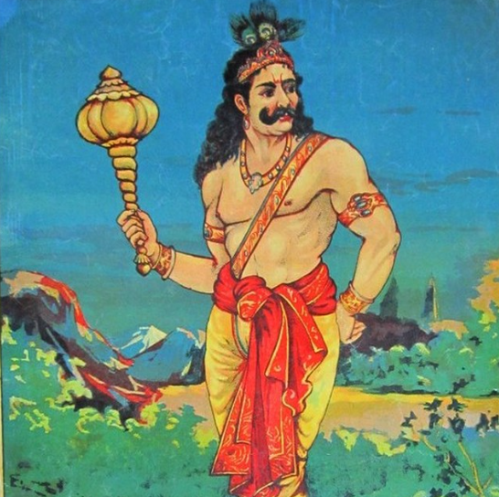
Arjuna adalah putra ketiga yang dikenal atas parasnya yang tampan, kelembutan budi pekerti, serta kemahirannya memanah. Ia kerap menjadi ksatria andalan Pandawa yang memperoleh berbagai pusaka sakti berkat ketekunannya bertapa. Kepribadiannya yang tenang dan karismatik menjadikannya sosok ksatria yang sangat disegani kawan maupun lawan.

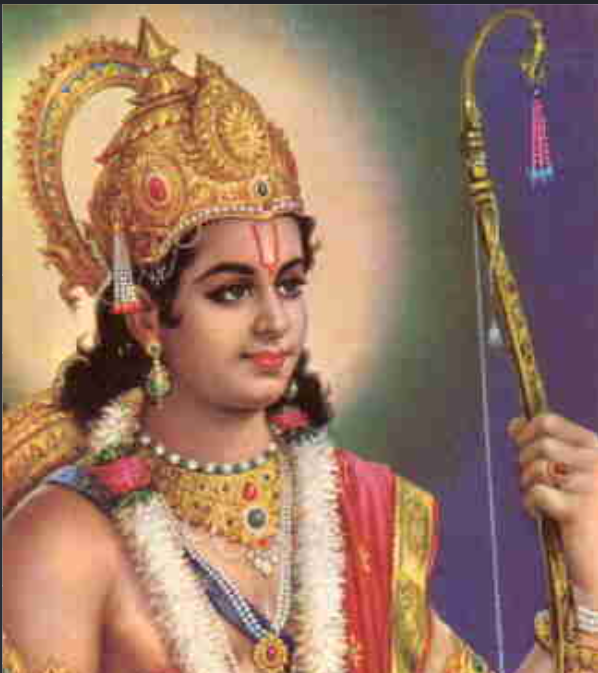

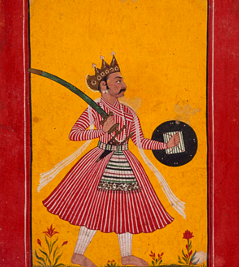
Nakula merupakan salah satu dari dua saudara kembar Pandawa yang dianugerahi ketampanan luar biasa serta kepandaian mengawat kuda. Ia ahli dalam merawat dan memahami karakter hewan, terutamanya kuda pacu kerajaan. Selain tangkas bertarung, kemampuannya dalam menjaga rahasia menjadikannya sosok yang sangat tepercaya di istana.
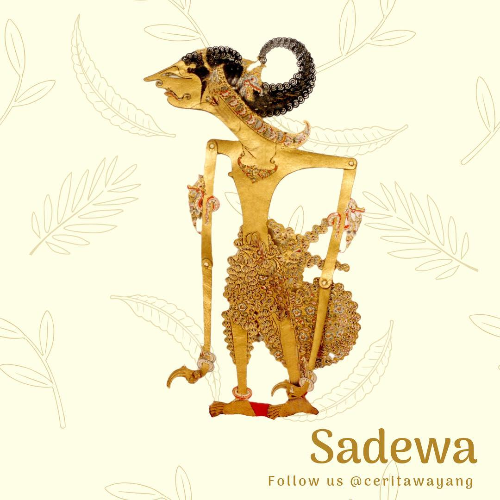
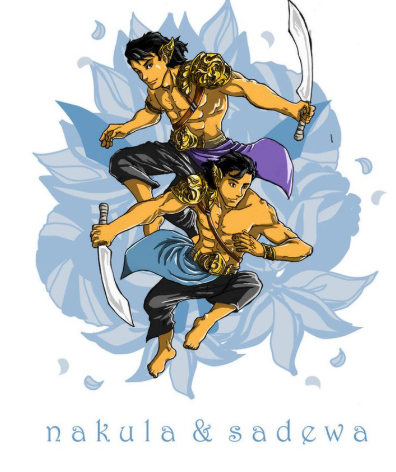
Sadewa adalah putra bungsu Pandawa sekaligus saudara kembar Nakula yang memiliki tingkat kecerdasan dan wawasan amat tinggi. Ia sangat mahir dalam ilmu perbintangan atau astronomi serta bijak dalam meramal strategi masa depan. Meski tergolong paling muda, nasihat bijaknya sering kali menjadi kunci penyelesaian masalah rumit Pandawa.
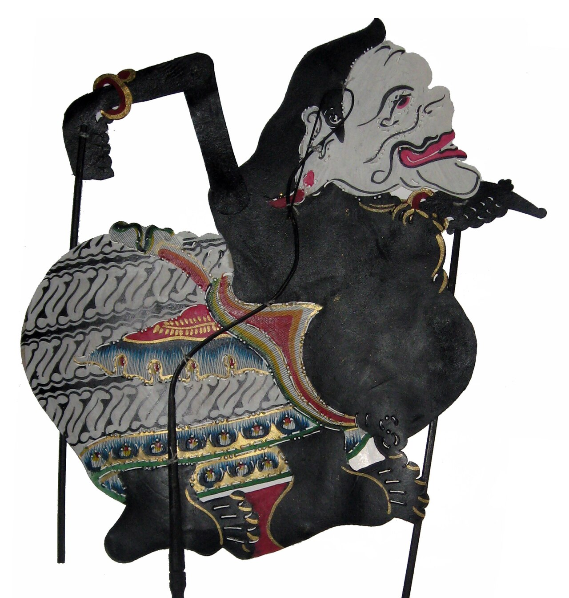
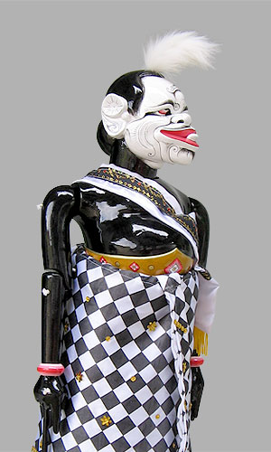
Semar atau Bodronoyo adalah sosok pengasuh sekaligus penasihat spiritual utama para ksatria Pandawa yang sebenarnya merupakan manifestasi dewa tertinggi, Batara Ismaya. Meskipun memiliki wujud fisik yang sangat sederhana, unik, dan kerap bersikap humoris, ia menyimpan kearifan serta kesaktian tiada tanding yang disegani oleh para dewa maupun raja.
Dalam tradisi pewayangan Jawa, kehadiran Semar melambangkan simbol pengayoman rakyat kecil serta penyeimbang dinamika moral kehidupan. Ia selalu membimbing para ksatria agar tidak menyeleweng dari kebenaran dan keadilan, menegaskan bahwa kejayaan sejati seorang pemimpin senantiasa berakar pada kerendahan hati, kearifan lokal, dan pengabdian tulus kepada sesama.


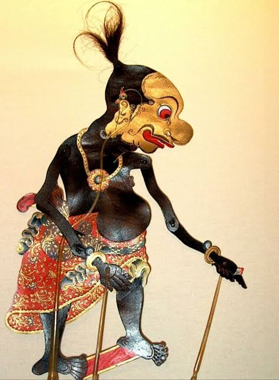
Gareng adalah putra sulung Semar yang berkaki pincang, bertangan patah, dan bermata juling. Cacat fisiknya mengandung ajaran moral agar manusia selalu berhati-hati dalam melangkah, bertindak, dan memandang dunia. Ia memiliki sifat humoris, jujur, serta sangat setia mendampingi para ksatria.
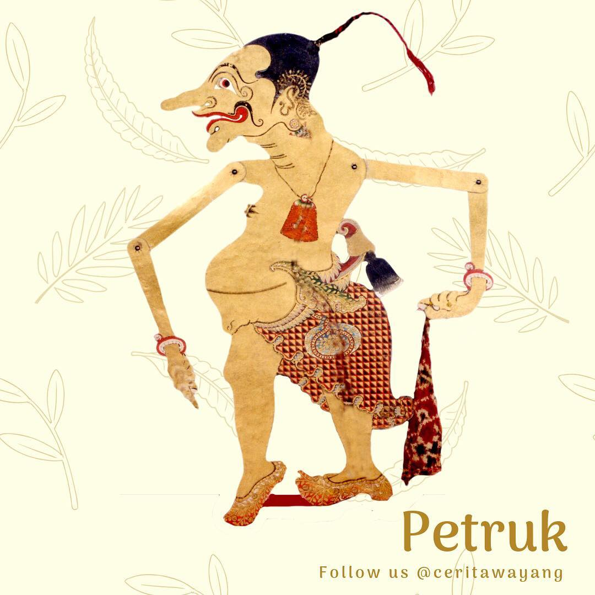
Petruk adalah anak kedua yang bertubuh sangat tinggi, berhidung panjang, dan suka tersenyum. Karakteristik fisiknya melambangkan pemikiran yang panjang dan berpandangan luas dalam menghadapi masalah. Ia sangat pandai mengocok perut dengan bualannya namun selalu menyimpan kritik sosial yang tajam.
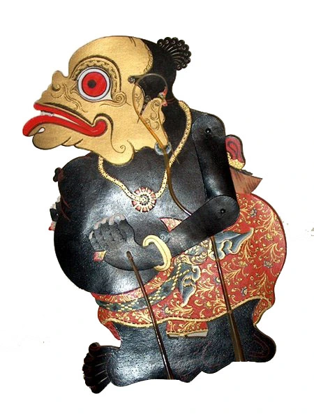
Bagong adalah anak bungsu yang bayangannya diciptakan langsung dari Semar, bermata lebar dan bertubuh gemuk. Ia memiliki sifat paling lancang, kritis, dan jujur tanpa basa-basi kepada siapa pun termasuk para raja. Kepolosannya menjadi simbol kebenaran murni tanpa kepalsuan.
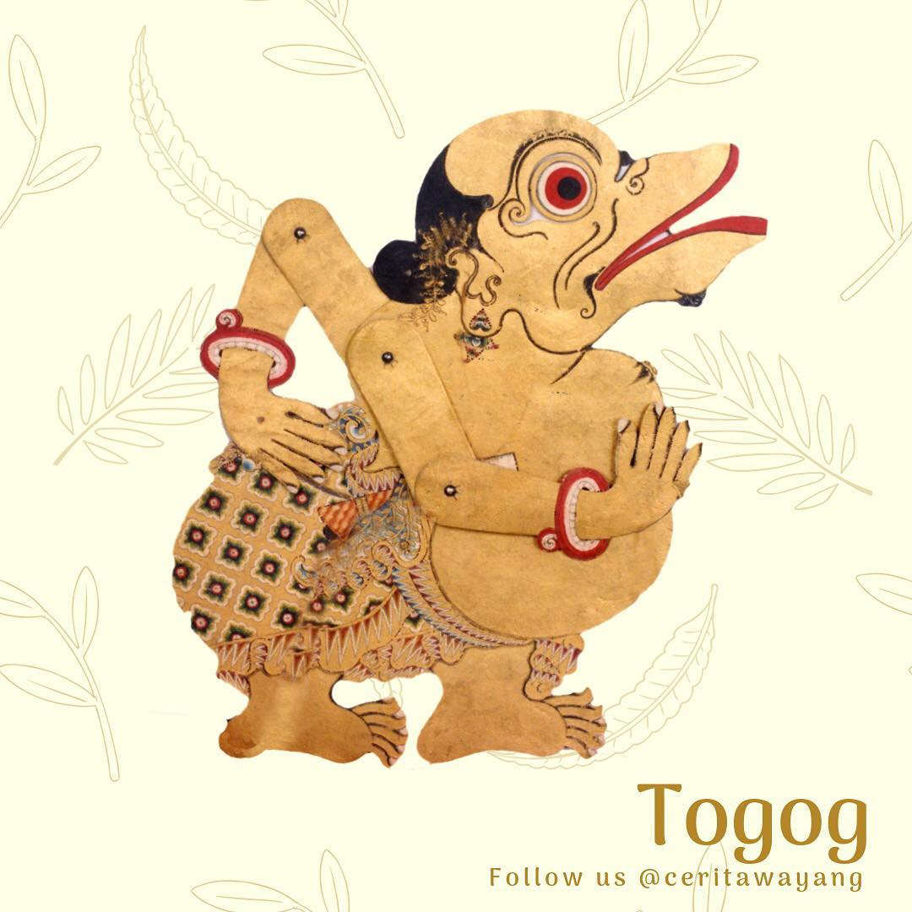
Togog atau Sanghyang Tejomantara adalah saudara Semar yang ditugaskan mengasuh para raksasa dan pihak antagonis. Meskipun melayani pihak jahat, ia selalu memberikan nasihat kebaikan agar para raja angkara murka menyadari kesalahannya. Tokoh ini melambangkan pengingat moral di tengah kegelapan.
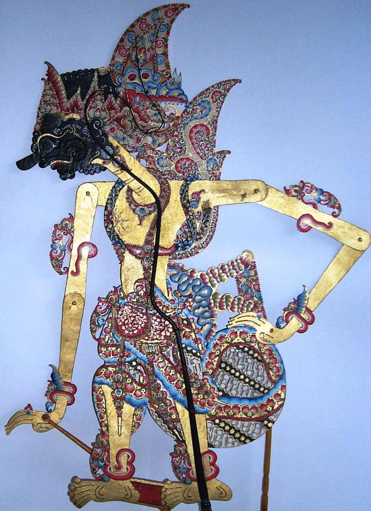
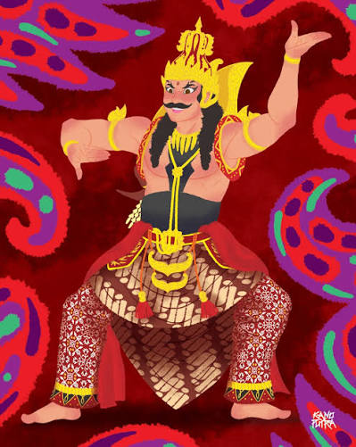
Duryudana adalah raja Hastinapura sekaligus sulung dari seratus Kurawa yang memiliki sifat ambisius, keras kepala, dan mudah terhasut. Keinginan kuatnya untuk menguasai seluruh kerajaan secara mutlak membuatnya membutakan keadilan dan menolak membagi kekuasaan dengan Pandawa. Meskipun sering dianggap licik, ia dikenal sangat loyal dan menghormati sahabat-sahabat karibnya seperti Karna.
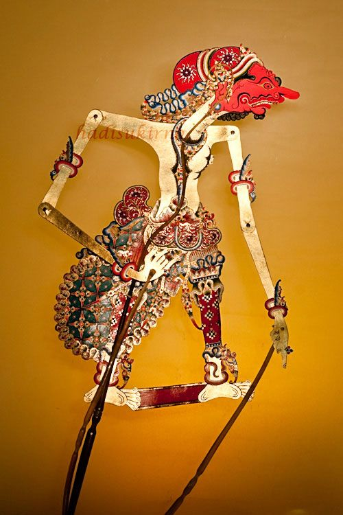
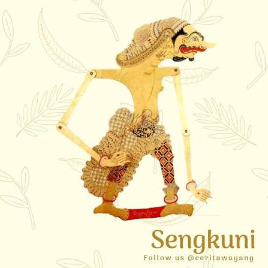
Patih Sengkuni merupakan paman dari Kurawa yang dikenal sebagai dalang di balik berbagai intrik politik dan adu domba berdarah di Hastinapura. Kelicikan serta keluesan bicaranya berhasil memicu permainan dadu fatal yang mengakibatkan Pandawa kehilangan kerajaan dan terbuang ke hutan. Dendam kesumat masa lalunya menjadi bahan bakar utama untuk menghancurkan trah Kuru dari dalam.


Resi Durna adalah guru besar ilmu keprajuritan yang mengajarkan seni berperang kepada Pandawa maupun Kurawa di masa muda mereka. Meski sebenarnya sangat mencintai Arjuna, keterikatan utang budi dan perlindungan dari istana Hastinapura memaksanya berdiri di pihak Kurawa saat Bharatayuddha. Dilema moral dan rasa sayangnya pada sang anak, Aswatama, menjadi titik lemah terbesarnya di medan laga.
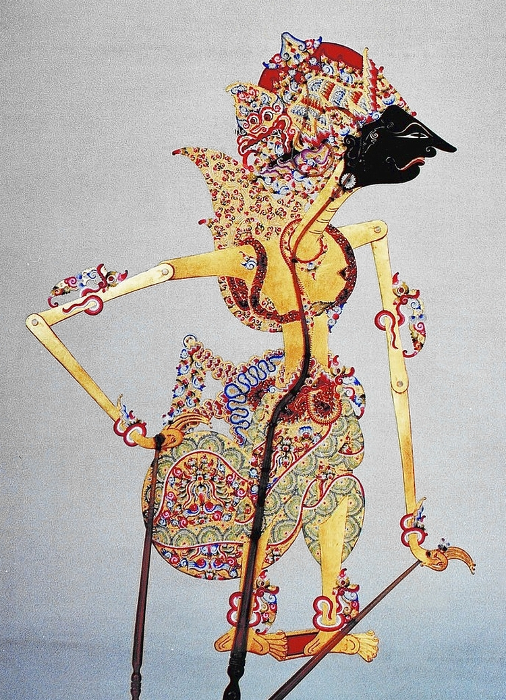

Adipati Karna adalah kakak kandung tertua Pandawa dari ibu Kunti yang dibuang sejak bayi dan dibesarkan oleh seorang kusir kuda. Karena sering dihina atas asal-usulnya, ia mendapat pengakuan serta martabat dari Duryudana sehingga mengikat janji setia sehidup semati kepada Kurawa. Karakter tragically heroic ini bertarung gagah berani di Bharatayuddha meski tahu dirinya berada di pihak yang salah demi sebuah kesetiaan.

Terbuat dari lembaran kulit kerbau atau sapi yang dipahat halus dan diwarnai. Dimainkan oleh dalang di balik layar kain putih (kelir) yang disorot lampu. Membawakan kisah epik Mahabarata dan Ramayana.
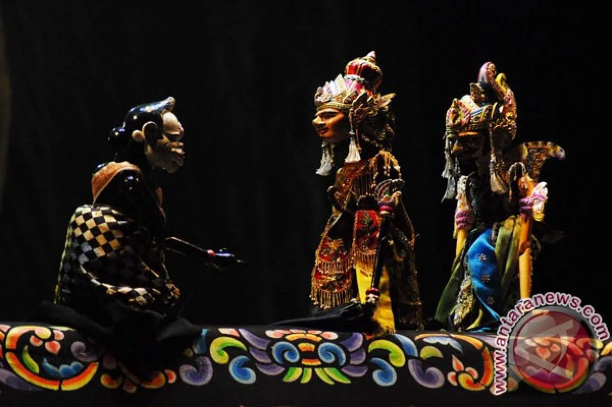
Seni pertunjukan boneka kayu 3 dimensi yang berasal dari tanah Sunda (Jawa Barat). Tokoh-tokohnya memiliki kostum kain berhias sulaman indah dan ekspresi wajah kayu yang sangat khas serta dinamis.

Bentuk drama tari di mana peran wayang ditarikan langsung oleh para aktor manusia. Para penari mengenakan riasan wajah dramatis dan mahkota mahkota megah seperti wujud tokoh wayang kulit asli.

Salah satu jenis wayang tertua yang menggunakan gulungan kain atau kertas bergambar (beber). Dalang menceritakan babak demi babak kisah Panji sambil membuka gulungan gambar secara berurutan.
Layar putih (kelir) melambangkan dunia tempat manusia hidup, sedangkan bayangan wayang melambangkan jiwa dan perjalanan hidup manusia yang digerakkan oleh Takdir (Dalang).
Pertarungan Pandawa (Kebaikan) dan Kurawa (Kejahatan) mengajarkan bahwa dalam diri manusia selalu ada pergolakan batin antara nafsu baik dan buruk yang harus dijaga keseimbangannya.
Setiap pertunjukan wayang bukan hanya sarana hiburan, melainkan media tontonan yang menjadi tuntunan moral, etika kepemimpinan, serta kerendahan hati dalam bermasyarakat.